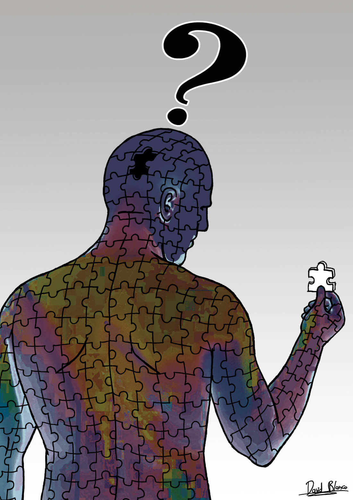
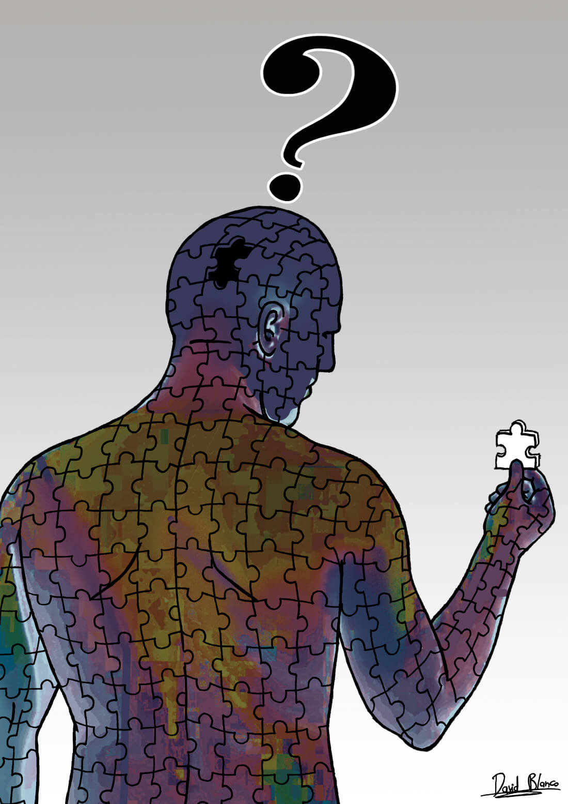

Resumen
"El hombre que lo tenía todo, todo, todo" es un cuento corto que forma parte del libro "Cuentos breves y maravillosos", publicado por primera vez en 1962. El relato gira en torno a un hombre que, como sugiere el título, posee todo lo que podría desear: riqueza, poder, y una vida aparentemente perfecta. Sin embargo, a lo largo de la historia se explora cómo esta abundancia puede llevar al vacío y la desesperanza. El hombre, a pesar de tenerlo todo, descubre que no posee lo más importante para la felicidad y la realización personal.
El cuento es una reflexión sobre el significado del verdadero bienestar y cómo las posesiones materiales no garantizan la satisfacción ni el sentido de la vida.
Temas principales
Critica al Materialismo:
El materialismo es un tema central en el cuento, donde el protagonista simboliza la obsesión de la sociedad moderna por las posesiones materiales.
Búsqueda del Sentido de la Vida:
Otro tema fundamental es la búsqueda del sentido de la vida. A lo largo del cuento, el protagonista lucha con el vacío existencial que siente a pesar de su éxito externo.
Vacío Existencial:
El vacío existencial es un tema recurrente en la obra de Asturias, y en este cuento se manifiesta en la vida del protagonista. A pesar de sus logros materiales, siente un profundo vacío que lo consume. Este vacío representa la desconexión entre lo que la sociedad valora y lo que realmente satisface las necesidades humanas más profundas.
ㅤ ㅤ
ㅤ
Citas relevantes
"A pesar de todo lo que había acumulado, se encontró más vacío que nunca, rodeado de riquezas que no podían llenar el hueco en su alma."
"Miró a su alrededor, a los objetos que una vez le dieron orgullo, y se dio cuenta de que no tenían vida, y, por lo tanto, no podían darle la suya."
"¿De qué sirve tener todo lo que uno puede desear si no se sabe por qué se desea?"
"Creyó que al tenerlo todo, tendría el control de su vida, pero la vida, caprichosa y despiadada, le enseñó lo contrario."
"Sus amigos lo elogiaban por lo que poseía, pero ninguno de ellos sabía quién era en realidad".
Las citas relevantes en un cuento como "El Hombre que lo Tenía Todo, Todo, Todo" de Miguel Ángel Asturias son frases o pasajes que encapsulan los temas, emociones y conflictos centrales de la obra.